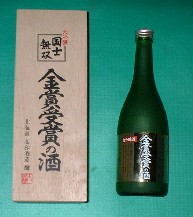
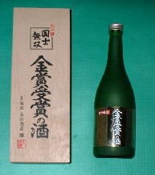
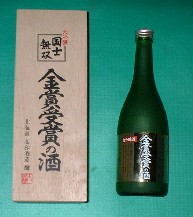

Maｈjan talk 雀話。
（70）国士無双酒 BBSに次のようなカキコがあった。 名前：なーだ 日付：2002/05/31(Fri) 国士無双という銘柄の日本酒(高砂酒造)があるんですが、そのカップ酒バージョンが6/5から主に全国の麻雀店向けに発売されるそうです。(5/31 日経産業新聞参照) ラベルには「福録寿牌」があしらわれているとのこと。価格は税別２１０円だそうです。お味の方は・・・飲んでみてくださいな。(^_^;) その酒の瓶ヴァージョンはコレだ。(^-^)V 
BBSに次のようなカキコがあった。 名前：なーだ 日付：2002/05/31(Fri) 国士無双という銘柄の日本酒(高砂酒造)があるんですが、そのカップ酒バージョンが6/5から主に全国の麻雀店向けに発売されるそうです。(5/31 日経産業新聞参照) ラベルには「福録寿牌」があしらわれているとのこと。価格は税別２１０円だそうです。お味の方は・・・飲んでみてくださいな。(^_^;) その酒の瓶ヴァージョンはコレだ。(^-^)V 

前へ 次へ 目次へ